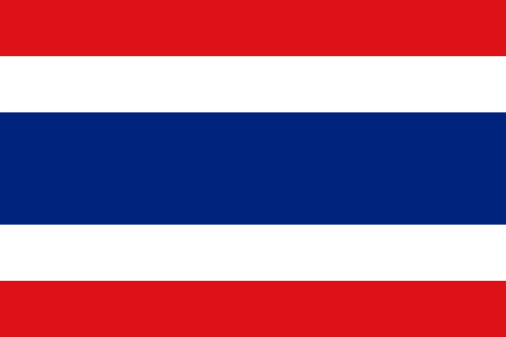

| 태국 | |
|  |
현재시간: 시차:2시간 빠름 수도:방콕 공용어:태국어 인구:약 7000만 명 종교:대부분 불교 전압:220v 50Hz 통화단위:밧(฿)
|
태국은 세 개의 계절로 나뉘 열대기후 나라
3월부터 5월까지는 덥고 건조한 날씨로 평균 기온은 34도 정도까지 올라가는 매우 더운 계절
6월에서 10월까지는 평균 29도 정도의 날씨로 우기에 해당
하루에 한 두 차례 소나기가 내리며, 비가 오지 않을 때는 화창하게 해가 비치는 날씨
세 계절 중 가장 시원한 11월에서 2월은 낮에는 32도까지 올라가지만
아침과 저녁에는 20도 정도까지 내려가 선선한 날씨를 즐길 수 있음
북부지방은 다른 곳 보다 선선한 기후를 나타내며 11월부터 5월까지 가장 건조한 날씨가 계속됨
특히 1월부터 5월에는 북동 지역의 몬순기후가 북부지역에 직접적인 영향을 미치지 않아
상대적으로 고온의 날씨를 보이나 11월부터 2월까지는 신선한 날씨를 보임
기타 5월부터 11월까지는 동서 몬순기후의 영향을 받아 상당한 강우량을 나타냄
남부지방은 오직 두 개의 시즌으로 나뉨(우기와 건기)
두 시즌은 반도의 동부와 서부에 동시에 영향을 미치지 않음
4월에서 10월까지 폭풍을 동반하는 몬순기후가 서부해안에 영향을 미치면
동부해안은 9월부터 12월까지 영향을 미침
태국의 남부지방은 북부지방과 중부지방의 강우량 1,400mm보다 훨씬 많은 연평균 2,400mm의 강우량을 보임
경찰 191
구급 1669
소방 199
비무슬림만 가능
불교 관련 기념일과 선거일 전날 저녁에는 술을 팔지 않으며,
이 기간 중 주류 판매 적발 시 업주가 처벌을 받음
또한, 자정(밤 12시)부터 오전 11시 및 오후 2시부터 오후 5시까지는 술의 판매가 법적으로 금지되어 있음
택시
요금: 기본요금 35바트 / 2바트씩 올라감
운영: 택시 회사 또는 개인 택시
500,1000바트 짜리는 거스름돈 받기 힘듬
1. 택시 타기전에 문을 열고 목적지를 말하기
2. 고개를 끄덕이거나 반응이 있다면 탑승하고,안간다고 하거나 300밧, 500밧을 외치면 보내고 다음 택시 잡기
3. 택시 탄 후에는 미터를 켰는지 확인하기
4. 모터웨이로 가자고 하면 안막히는 대신에 고속도로 통행료는 손님이 내야하므로 잘 선택하기
5. 내릴 때 미터 요금이 깔끔하게 떨어지지 않는다면 간단한 팁으로 주고 내리기
트럭 버스(썽태우)
요금: 7바트-20바트 정도 / 지역에 따라 다름
운영: 개인 사업자
손님을 많이 태우면 태울수로 수입이 많아지므로
출퇴근 시간에는 트럭이 터질 정도로 꽉 차 벨 누르기가 힘듬
1. 트럭앞 위쪽 번호 마다 목적지가 다름
(목적지와 요금은 타기 전에 기사에게 물어보면 됨)
2. 택시처럼 잡아 타고 트럭 뒤로 탑승
3. 내리고 싶은 곳에서 벨 누르기
4. 트럭이 정차하면 내려서 조수석 쪽으로 가서 요금 내기
미니 트럭 택시(까뻐)
썽태우보다 작은 트럭
대부분 골목에서 큰길까지만 운행
요금: 7바트-20바트 정도/ 지역에 따라 다름
운영: 개인 사업자
1. 트럭앞 유리에 목적지가 표기
(BTS는 영어로 표기되어 있으니 지상철역까지 감)
2. 뒤로 탑승
3. 내리고 싶은 곳에서 벨 누르기
4. 트럭이 정차하면 내려서 조수석 쪽으로 가서 요금 내기
버스(롣메)
현지인들이 많이 이용하는 대중교통수단
비 올 때는 두시간씩 기다려서 탐
요금
빨간색: 흰색 에어컨 없는 버스는 6.50바트(정부 운영)
주황색: 에어컨 버스는 기본요금 11-16바트 정도
거리에 따라 다르지만 최대 18바트 정도(정부 운영)
주황색 에어컨 없는 작은 버스는 거리 상관없이 9바트
노란색: 구간 상관없이 13바트
장거리 고속도로 이용버스는 거리에따라 30바트 이상
에어컨 없는 파랑+흰색+노랑 버스: 전 구간 9바트
에어컨이 있다면 10-13바트 정도
핑크색: 에어컨 없는 버스는 전구간 9바트
녹색 에어컨 버스는 빨간 버스 후속작으로 6.50바트
1. 목적지의 번호를 보고 타기(색깔 상관X)
2. 탑승하면 요금 걷으시는 분이 다가옴(목적지 말하면 얼마라고 얘기해줌)
3. 내리고 싶은 곳에서 벨 누르기
4. 내릴때는 정확하게 1차선에 안내려 줄때도 있으니 좌우 살피기
오토바이 택시(랍짱)
요금: 기본요금 10바트 / 5바트씩 올라감
운영: 개인 오토바이
잔돈 준비하기
1. 목적지까지 얼마인지 요금 확인하기
(보통 같은 골목은 10바트, 옆골목으로 갈때마다 10바트씩 올라가기도 함)
2. 한 오토바이에 한 명씩 타기(한 명당 가격이므로 가격은 똑같음)
3. 목적지 말하기
오토바이 개조 삼륜차(뚝뚝)
요금: 흥정하기 나름 / 외국인은 무조건 100바트 이상
운영: 개인 뚝뚝
차선에 관계없이 달리기 때문에 매연과 더위를 피할 수 없음
마스크 착용 필수
목적지를 말하고 가격 흥정하기(부르는 가격보다 무조건 깎기)
간선급행버스체계(BRT)
도심속 고속버스역
지상철(BTS)
요금: 기본요금 10-15바트 / 구간에 따라 다름
운영: 방콕메트로폴리탄
동전으로만 티켓 구입 가능
1. 목적지 확인하고 동그라미 안 숫자(요금) 확인하기
2. 요금 숫자 누르기
3. 동전 넣기(1, 5, 10바트만 사용 가능)
4. 네모 티켓 뽑기
5. 거스름돈이 있는 경우 동전으로 떨어짐